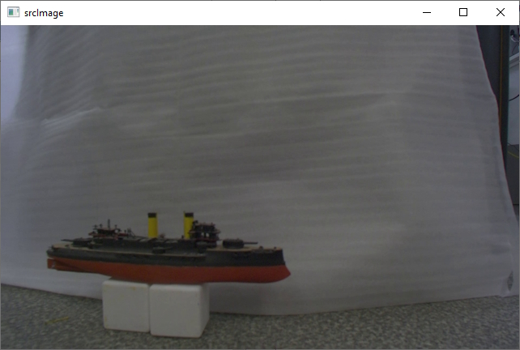

Подготовка к работе
Зависимости библиотеки
Для работы с библиотекой используется версия OpenCV 4.10, которая должна быть предварительно собрана и установлена на исполняемой платформе с операционными системами Windows или Linux. Для поддержки CUDA сборка OpenCV должна проводиться с установленными CUDA 12.4 и cuDNN 9.3. Для сборки должна быть использована версия CMake не ниже 3.14. Также для работы с библиотекой требуется libtorch 2.4.0. При этом сборка с CUDA или без определяется установочным пакетом от разработчиков libtorch.
Установка и первоначальная настройка библиотеки
Для операционной системы Windows (сокращенная версия)
Для установки библиотеки необходимо выполнить следующие действия:
Клонировать актуальную версию проекта, используя команды:
cd ~ git clone --branch main https://github.com/valabsoft/code-ai-400393.git
Установить зависимости (CUDA Toolkit 12.4 и cuDNN 9.3) библиотеки, указанные в разделе Зависимости библиотеки: libtorch, OpenCV, yaml-cpp (отображены рекомендованные пути для ОС Windows):
C:\ ├───libtorch-12.4 ├───libtorch-12.4-cuda ├───opencv-4.10.0-build ├───opencv-4.10.0-build-cuda └───yaml-cpp
Для корректной работы библиотеки под управлением операционной системы Windows необходимо прописать системные пути в переменные окружения:
C:\opencv-4.10.0-build\install\x64\vc17\bin\ C:\opencv-4.10.0-build-cuda\install\x64\vc17\bin\
Настроить сборку, установив ключ поддержки CUDA. Для этого отредактировать CMakeLists.txt проекта
option(USE_CUDA "Use CUDA Build" OFF) Флаг ON/OFF определяет режим сборки библиотеки: OFF – сборка без поддержки CUDA. Используются OpenCV и LibTorch для CPU. CUDA-функции не будут доступны. ON — сборка с поддержкой CUDA. Используются OpenCV с модулями CUDA и LibTorch для CUDA. CUDA-функции активны в пространстве имен mrcv.
- Для включения поддержки CUDA необходимо:
установить CUDA Toolkit 12.4;
загрузить архив (Tarball) cuDNN, содержащий папки bin, lib и include и копировать их в каталог установки CUDA Toolkit;
выполнить сборку и установку проекта согласно инструкциям далее;
запустить проект от имени администратора и открыть mrcv как локальную папку;
выбрать конфигурацию сборки dev-win;
в разделе «сборка» выбрать «Собрать проект»;
после успешной сборки в разделе «сборка» выбрать «Установить mrcv».
Для операционной системы Windows (расширенная версия)
Для установки библиотеки необходимо выполнить следующие действия:
Установить необходимые компоненты:
CMake GUI 3.30.0-rc4
Git Bash
Visual Studio 2022 Community Edition
yaml-cpp
cd C:\ git clone https://github.com/jbeder/yaml-cpp.git cd yaml-cpp mkdir build cd build cmake .. -DYAML_CPP_BUILD_TESTS=OFF -DYAML_CPP_INSTALL=ON cmake --build . --config Release cmake --install . --prefix "C:\yaml-cpp"
LibTorch 2.4.0 с поддержкой CUDA 12.4 (доступна по ссылке: https://download.pytorch.org/libtorch/cu124/libtorch-win-shared-with-deps-2.4.0%2Bcu124.zip) или без поддержки CUDA (https://download.pytorch.org/libtorch/cpu/libtorch-win-shared-with-deps-2.4.0%2Bcpu.zip)
CUDA Toolkit 12.4 (доступ по ссылке https://developer.nvidia.com/cuda-12-4-0-download-archive)
cuDNN 9.3.0 (доступ по ссылке https://developer.nvidia.com/cudnn-9-3-0-download-archive?target_os=Windows&target_arch=x86_64) Необходимо скачать версию Tarball, будет загружен архив с тремя папками: bin, include, lib. Их нужно скопировать в папку установки CUDA Toolkit 12.4. Путь по умолчанию:
C:\Program Files\NVIDIA GPU Computing Toolkit\CUDA\v12.4.nvToolsExt (NVTX)
Клонировать репозитории с версией OpenCV 4.10:
git clone https://github.com/opencv/opencv.git -b "4.10.0" git clone https://github.com/opencv/opencv_contrib.git -b "4.10.0"
Создать директорию для сборки библиотеки.
Запустить CMake-GUI.
Выбрать компилятор Visual Studio 17 2022.

В полях Where is the source code и Where is the build binaries указать пути к папке с исходниками OpenCV и созданной папке build. Например, папка
installсодержит собранные материалы библиотеки OpenCV и экстра модулей.
Нажать Configure.
После успешного конфигурирования найти и выставить параметры:
CMAKE_INSTALL_PREFIX->D:/ваш путь к собранной библиотеке/cvcudaEXECUTABLE_OUTPUT_PATH->D:/ваш путь к собранной библиотеке/cvcuda/binOPENCV_EXTRA_MODULES_PATH->D:/ваш путь к собранной библиотеке/opencv_contrib/modulesОтметить галочкой
WITH_CUDA
Примечание: Если переменные отсутствуют в перечне, нужно поставить галочку в пункте Advanced.
Нажать Configure и выставить дополнительные параметры:
Отметить
CUDA_FAST_MATH,OPENCV_DNN_CUDA,ENABLE_FAST_MATH,WITH_OPENGLСнять галочки с
WITH_NVCUVENC,WITH_NVCUVID,WITH_VTKУказать архитектуру видеокарты в
CUDA_ARCH_BINЕсли cuDNN установлен в нестандартном месте, указать пути:
CUDNN_LIBRARY-> путь к файлуcudnn.libCUDNN_INCLUDE_DIR-> путь к папкеincludecuDNN
Нажать Generate.
После генерации нажать Open Project для запуска проекта Visual Studio.
В обозревателе решений Visual Studio в папке CMakeTargets нажать правой кнопкой на ALL_BUILD и выбрать Build.

После успешной сборки выполнить сборку конфигурации INSTALL.
Для операционной системы Linux (Ubuntu) без поддержки CUDA (пошаговая версия)
Необходимо выполнить следующий ряд действий:
Установить зависимости с помощью набора команд
sudo apt update sudo apt install -y unzip wget curl build-essential cmake git libgtk2.0-dev pkg-config libavcodec-dev libavformat-dev libswscale-dev libtbb2 libtbb-dev libjpeg-dev libpng-dev libtiff-dev libdc1394-dev
Установить библиотеку yaml-cpp
cd ~ git clone https://github.com/jbeder/yaml-cpp.git cd yaml-cpp cmake . make -j$(nproc) sudo make install
Установить библиотеку OpenCV
Выполнить команды:
cd ~
git clone https://github.com/opencv/opencv.git -b "4.10.0"
git clone https://github.com/opencv/opencv_contrib.git -b "4.10.0"
mkdir -p opencv/build && cd opencv/build
cmake -D CMAKE_BUILD_TYPE=Release \
-D CMAKE_INSTALL_PREFIX=/usr/local \
-D OPENCV_EXTRA_MODULES_PATH=../../opencv_contrib/modules \
..
sudo make -j$(nproc)
sudo make install
Сборка осуществляется в папке build. При возникновении ошибок необходимо очистить папки build и .cache.
Установить библиотеку LibTorch
Скачать соответсвующий архив с библиотекой:
cd ~ curl -L "https://download.pytorch.org/libtorch/cpu/libtorch-cxx11-abi-shared-with-deps-2.4.0%2Bcpu.zip" -o libtorch-library.zip
Распаковать архив libtorch-library.zip с помощью команды:
sudo unzip -o libtorch-library.zip -d /opt/
Добавить путь к libtorch в динамический компоновщик с помощью команды
sudo sh -c "echo '/opt/libtorch/lib' >> /etc/ld.so.conf.d/libtorch.conf"
Обновить кэш динамического компоновщика с помощью команды:
sudo ldconfig
Добавить путь к заголовочным файлам и библиотекам в переменные окружения, отредактировав файл ~/.bashrc, открыв его при помощи команды
sudo nano ~/.bashrc
и записав конец следующие строки:
export TORCH_INCLUDE=/opt/libtorch/include
export TORCH_LIB=/opt/libtorch/lib
export LD_LIBRARY_PATH=$LD_LIBRARY_PATH:$TORCH_LIB
export CPATH=$CPATH:$TORCH_INCLUDE
export Torch_DIR=/opt/libtorch/share/cmake/Torch
затем сохранив (Ctrl + O, Ctrl + X) необходимо активировать изменения при помощи команды
source ~/.bashrc
Убедиться в правильности установки можно используя инструкцию https://docs.pytorch.org/cppdocs/installing.html. При нехватке системных ресурсов при сборке рекомендуется запускать сборку через make без указания параметра -j.
Для операционной системы Linux (Ubuntu) без поддержки CUDA (версия с помощью скрипта)
Для установки библиотеки необходимо выполнить следующие действия:
Клонировать актуальную версию проекта, используя команды:
cd ~ git clone --branch main https://github.com/valabsoft/code-ai-400393.git
Установить библиотеки, указанные в разделе Зависимости библиотеки
Выполнить команды
cd ~/code-ai-400393 mkdir -p build && cd build cmake .. make -j$(nproc) sudo make install sudo ldconfig -v
Для установки библиотеки вместе с требующимися зависимостями возможно запустить shell-скрипт. Для этого нужно создать файл с помощью последовательности команд
cd ~ nano install_cpu.sh
Вставить код, предстваленный ниже, в файл
#!/bin/bash set -e sudo apt update sudo apt install -y unzip wget curl build-essential cmake git \ libgtk2.0-dev pkg-config libavcodec-dev libavformat-dev libswscale-dev \ libtbb2 libtbb-dev libjpeg-dev libpng-dev libtiff-dev libdc1394-dev cd ~ if [ ! -d yaml-cpp ]; then git clone https://github.com/jbeder/yaml-cpp.git fi cd yaml-cpp cmake . make -j$(nproc) sudo make install cd ~ if [ ! -f libtorch-library.zip ]; then curl -L "https://download.pytorch.org/libtorch/cpu/libtorch-cxx11-abi-shared-with-deps-2.4.0%2Bcpu.zip" -o libtorch-library.zip fi sudo unzip -o libtorch-library.zip -d /opt/ TORCH_CONF="/etc/ld.so.conf.d/libtorch.conf" if ! grep -q "/opt/libtorch/lib" "$TORCH_CONF" 2>/dev/null; then echo "/opt/libtorch/lib" | sudo tee "$TORCH_CONF" sudo ldconfig fi BASHRC="$HOME/.bashrc" ENV_MARK="# BEGIN TORCH ENV" if ! grep -q "$ENV_MARK" "$BASHRC"; then echo "$ENV_MARK" >> "$BASHRC" echo "export TORCH_INCLUDE=/opt/libtorch/include" >> "$BASHRC" echo "export TORCH_LIB=/opt/libtorch/lib" >> "$BASHRC" echo "export LD_LIBRARY_PATH=\$LD_LIBRARY_PATH:\$TORCH_LIB" >> "$BASHRC" echo "export CPATH=\$CPATH:\$TORCH_INCLUDE" >> "$BASHRC" echo "export Torch_DIR=/opt/libtorch/share/cmake/Torch" >> "$BASHRC" echo "# END TORCH ENV" >> "$BASHRC" fi source "$BASHRC" cd ~ if [ ! -d opencv ]; then git clone https://github.com/opencv/opencv.git -b "4.10.0" fi if [ ! -d opencv_contrib ]; then git clone https://github.com/opencv/opencv_contrib.git -b "4.10.0" fi mkdir -p opencv/build && cd opencv/build cmake -D CMAKE_BUILD_TYPE=Release \ -D CMAKE_INSTALL_PREFIX=/usr/local \ -D OPENCV_EXTRA_MODULES_PATH=../../opencv_contrib/modules \ .. sudo make -j$(nproc) sudo make install sudo ldconfig cd ~ if [ ! -d code-ai-400393 ]; then git clone --branch main https://github.com/valabsoft/code-ai-400393.git fi cd code-ai-400393 mkdir -p build && cd build cmake .. make -j$(nproc) sudo make install sudo ldconfig -v
Сохранить содержимое файла Ctrl + O и закрыть файл Ctrl + X. Сделать файл исполняемым с помощью команды
chmod +x install_cpu.sh
Запустить скрипт
./install_cpu.sh
Для операционной системы Linux (Ubuntu) с поддержкой CUDA (пошаговая версия)
Необходимо выполнить следующий ряд действий:
Установить зависимости с помощью набора команд
sudo apt update sudo apt install -y unzip wget curl build-essential cmake git libgtk2.0-dev pkg-config libavcodec-dev libavformat-dev libswscale-dev libtbb2 libtbb-dev libjpeg-dev libpng-dev libtiff-dev libdc1394-dev
Установить библиотеку yaml-cpp
cd ~ git clone https://github.com/jbeder/yaml-cpp.git cd yaml-cpp cmake . make -j$(nproc) sudo make install
Установить CUDA Toolkit 12.4
cd ~ wget https://developer.download.nvidia.com/compute/cuda/12.4.0/local_installers/cuda-repo-ubuntu2204-12-4-local_12.4.0-550.54.14-1_amd64.deb sudo dpkg -i cuda-repo-ubuntu2204-12-4-local_12.4.0-550.54.14-1_amd64.deb sudo cp /var/cuda-repo-ubuntu2204-12-4-local/cuda-*-keyring.gpg /usr/share/keyrings/ sudo apt-get update sudo apt-get -y install cuda-toolkit-12-4
Установить cuDNN 9.3
cd ~ wget https://developer.download.nvidia.com/compute/cudnn/9.3.0/local_installers/cudnn-local-repo-ubuntu2204-9.3.0_1.0-1_amd64.deb sudo dpkg -i cudnn-local-repo-ubuntu2204-9.3.0_1.0-1_amd64.deb sudo cp /var/cudnn-local-repo-ubuntu2204-9.3.0/cudnn-*-keyring.gpg /usr/share/keyrings/ sudo apt-get update sudo apt-get -y install cudnn
Установить библиотеку OpenCV
Выполнить последовательность команд
cd ~
git clone https://github.com/opencv/opencv.git -b "4.10.0"
git clone https://github.com/opencv/opencv_contrib.git -b "4.10.0"
mkdir -p opencv/build && cd opencv/build
sudo cmake .. \
-D CMAKE_INSTALL_PREFIX=/usr/local/ \
-D CMAKE_CXX_COMPILER=/usr/bin/g++-11 \
-D ENABLE_FAST_MATH=ON \
-D CUDA_FAST_MATH=ON \
-D WITH_CUBLAS=ON \
-D WITH_CUDA=ON \
-D WITH_CUDNN=ON \
-D CUDA_ARCH_BIN=8.6 \
-D WITH_OPENGL=ON \
-D BUILD_opencv_cudacodec=ON \
-D BUILD_opencv_world=OFF \
-D OPENCV_GENERATE_PKGCONFIG=ON \
-D OPENCV_EXTRA_MODULES_PATH=../../opencv_contrib/modules \
-D CMAKE_CONFIGURATION_TYPES=Release
sudo make -j$(nproc)
sudo make install
Сборка осуществляется в папке build. При возникновении ошибок необходимо очистить папки build и .cache.
Установить библиотеку LibTorch
Скачать соответсвующий архив с библиотекой
cd ~ curl -L "https://download.pytorch.org/libtorch/cu124/libtorch-cxx11-abi-shared-with-deps-2.4.0%2Bcu124.zip" -o libtorch-library.zip
Распаковать архив libtorch-library.zip с помощью команды
sudo unzip -o libtorch-library.zip -d /opt/
Добавить путь к libtorch в динамический компоновщик с помощью команды
sudo sh -c "echo '/opt/libtorch/lib' >> /etc/ld.so.conf.d/libtorch.conf"
Обновить кэш динамического компоновщика с помощью команды
sudo ldconfig
Добавить путь к заголовочным файлам и библиотекам в переменные окружения, отредактировав файл ~/.bashrc, открыв его при помощи команды
sudo nano ~/.bashrc
и записать в конец файла следующие строки
export TORCH_INCLUDE=/opt/libtorch/include
export TORCH_LIB=/opt/libtorch/lib
export LD_LIBRARY_PATH=$LD_LIBRARY_PATH:$TORCH_LIB
export CPATH=$CPATH:$TORCH_INCLUDE
export Torch_DIR=/opt/libtorch/share/cmake/Torch
Сохранить изменения Ctrl + O и закрыть файл Ctrl + X. Активировать изменения с помощью команды
source ~/.bashrc
Убедиться в правильности установки можно используя инструкцию https://docs.pytorch.org/cppdocs/installing.html. При нехватке системных ресурсов при сборке рекомендуется запускать сборку через make без указания параметра -j.
Для операционной системы Linux (Ubuntu) с поддержкой CUDA (версия с помощью скрипта)
Для установки библиотеки необходимо выполнить следующие действия:
Клонировать актуальную версию проекта, используя команды:
cd ~ git clone --branch main https://github.com/valabsoft/code-ai-400393.git
Установить библиотеки, указанные в разделе Зависимости библиотеки
Выполнить последовательность команд
cd ~/code-ai-400393 sed -i 's/option(USE_CUDA "Use CUDA Build" OFF)/option(USE_CUDA "Use CUDA Build" ON)/' CMakeLists.txt mkdir -p build && cd build sudo cmake -DCMAKE_CUDA_COMPILER:PATH=/usr/local/cuda/bin/nvcc .. make -j$(nproc) sudo make install sudo ldconfig -v
Для установки библиотеки вместе с требующимися зависимостями возможно запустить shell-скрипт. Для этого необходимо создать файл с помощью команды
cd ~ nano install_cuda.sh
В созданный файл вставить содержимое, представленное ниже
#!/bin/bash set -e sudo apt update sudo apt install -y unzip wget curl build-essential cmake git \ libgtk2.0-dev pkg-config libavcodec-dev libavformat-dev libswscale-dev \ libtbb2 libtbb-dev libjpeg-dev libpng-dev libtiff-dev libdc1394-dev cd ~ if [ ! -d yaml-cpp ]; then git clone https://github.com/jbeder/yaml-cpp.git fi cd yaml-cpp cmake . make -j$(nproc) sudo make install cd ~ if [ ! -f cuda-repo-ubuntu2204-12-4-local_12.4.0-550.54.14-1_amd64.deb ]; then wget https://developer.download.nvidia.com/compute/cuda/12.4.0/local_installers/cuda-repo-ubuntu2204-12-4-local_12.4.0-550.54.14-1_amd64.deb fi sudo dpkg -i cuda-repo-ubuntu2204-12-4-local_12.4.0-550.54.14-1_amd64.deb sudo cp /var/cuda-repo-ubuntu2204-12-4-local/cuda-*-keyring.gpg /usr/share/keyrings/ sudo apt-get update sudo apt-get -y install cuda-toolkit-12-4 cd ~ if [ ! -f cudnn-local-repo-ubuntu2204-9.3.0_1.0-1_amd64.deb ]; then wget https://developer.download.nvidia.com/compute/cudnn/9.3.0/local_installers/cudnn-local-repo-ubuntu2204-9.3.0_1.0-1_amd64.deb fi sudo dpkg -i cudnn-local-repo-ubuntu2204-9.3.0_1.0-1_amd64.deb sudo cp /var/cudnn-local-repo-ubuntu2204-9.3.0/cudnn-*-keyring.gpg /usr/share/keyrings/ sudo apt-get update sudo apt-get -y install cudnn cd ~ if [ ! -d opencv ]; then git clone https://github.com/opencv/opencv.git -b "4.10.0" fi if [ ! -d opencv_contrib ]; then git clone https://github.com/opencv/opencv_contrib.git -b "4.10.0" fi mkdir -p opencv/build && cd opencv/build sudo cmake .. \ -D CMAKE_INSTALL_PREFIX=/usr/local/ \ -D CMAKE_CXX_COMPILER=/usr/bin/g++-11 \ -D ENABLE_FAST_MATH=ON \ -D CUDA_FAST_MATH=ON \ -D WITH_CUBLAS=ON \ -D WITH_CUDA=ON \ -D WITH_CUDNN=ON \ -D CUDA_ARCH_BIN=8.6 \ -D WITH_OPENGL=ON \ -D BUILD_opencv_cudacodec=ON \ -D BUILD_opencv_world=OFF \ -D OPENCV_GENERATE_PKGCONFIG=ON \ -D OPENCV_EXTRA_MODULES_PATH=../../opencv_contrib/modules \ -D CMAKE_CONFIGURATION_TYPES=Release sudo make -j$(nproc) sudo make install sudo ldconfig cd ~ if [ ! -f libtorch-library.zip ]; then curl -L "https://download.pytorch.org/libtorch/cu124/libtorch-cxx11-abi-shared-with-deps-2.4.0%2Bcu124.zip" -o libtorch-library.zip fi sudo unzip -o libtorch-library.zip -d /opt/ TORCH_CONF="/etc/ld.so.conf.d/libtorch.conf" if ! grep -q "/opt/libtorch/lib" "$TORCH_CONF" 2>/dev/null; then echo "/opt/libtorch/lib" | sudo tee "$TORCH_CONF" sudo ldconfig fi BASHRC="$HOME/.bashrc" ENV_MARK="# BEGIN TORCH ENV" if ! grep -q "$ENV_MARK" "$BASHRC"; then echo "$ENV_MARK" >> "$BASHRC" echo "export TORCH_INCLUDE=/opt/libtorch/include" >> "$BASHRC" echo "export TORCH_LIB=/opt/libtorch/lib" >> "$BASHRC" echo "export LD_LIBRARY_PATH=\$LD_LIBRARY_PATH:\$TORCH_LIB" >> "$BASHRC" echo "export CPATH=\$CPATH:\$TORCH_INCLUDE" >> "$BASHRC" echo "export Torch_DIR=/opt/libtorch/share/cmake/Torch" >> "$BASHRC" echo "# END TORCH ENV" >> "$BASHRC" fi source "$BASHRC" cd ~ if [ ! -d code-ai-400393 ]; then git clone --branch main https://github.com/valabsoft/code-ai-400393.git fi cd code-ai-400393 sed -i 's/option(USE_CUDA "Use CUDA Build" OFF)/option(USE_CUDA "Use CUDA Build" ON)/' CMakeLists.txt mkdir -p build && cd build sudo cmake -DCMAKE_CUDA_COMPILER:PATH=/usr/local/cuda/bin/nvcc .. sudo make -j$(nproc) sudo make install sudo ldconfig -v
Сохранить содержимое файла Ctrl + O и закрыть файл Ctrl + X.
Сделать файл исполняемым с помощью последовательности команд
chmod +x install_cuda.sh
Запустить скрипт
./install_cuda.sh
Инструкция по установке Python версии библиотеки mrcv
Минимальная версия Python для работы с библиотекой - 3.10.
Проверить, установлен ли Python
python3 –version
Если Python отсутствует, установить с помощью команды
sudo apt-get update sudo apt-get install python3
Проверить, установлена ли поддержка Git
git –version
Если Git не установлен, установить с помощью команды
sudo apt-get install git
Клонировать репозиторий кода из ветки main
git clone –branch main https://github.com/valabsoft/code-ai-400393.git
Локальная копия репозитория создана на вашем устройстве.
Перейти в локальную копию репозитория на устройстве
cd code-ai-400393/python
Рекомендуется использовать виртуальное окружение для изоляции зависимостей. Для этого необходимо выполнить следующие действия.
Создайте виртуальное окружение с именем venv
python3 -m venv venv
Активировать окружение
source venv/bin/activate
После этого в терминале появится venv, что указывает на активное окружение.
В директории есть файл requirements.txt с необходимыми библиотеками:
Если файл находится в корневой директории, выполнить команду
pip install -r requirements.txt
Установите библиотеку с помощью команды
pip install -e .
Перейти в директорию с примерами с помощью команды
cd python/examples
Выбрать папку модуля и запустить пример. Предварительно убедиться, что в папке присутствуют файлы, использующиеся в качестве исходных данных
cd python/examples/comparing/ python comparing.py
Подготовка данных для работы с примерами
При знакомстве с библиотекой mrcv, после изучения состава модулей библиотеки, рекомендуется обратиться к демонстрационным примерам. Все примеры библиотеки снабжены необходимыми файлами, которые используются в качестве входных данных. После сборки примера рекомендуется скопировать в папку сборки примера папку files из репозитория кода. После копирования исходных данных выполнить запуски примера.
Пример
Демонстрация работы функций модуля сегментации (для операционной системы Windows). Код примера находится в папке code-ai-400393\examples\segmentationtest
Порядок работы:
Собрать исполняемый файл примера. В случае успешной сборки, исполняемый файл примера будет создан в папке code-ai-400393\build\examples\segmentationtest
Скопировать папку files с исходными данными из папки code-ai-400393\examples\segmentationtest\files в папку code-ai-400393\build\examples\segmentationtest\files
Запустить исполняемый файл примера mrcv-segmentationtest.exe
В результате работы функции будет открыто два окна с исходным изображением и с изображением, полученным в результате работы функции сегмнетации
Исходное изображение

Результат работы функции

После работы с исходными данными примера по-умолчанию, внести изменения в код примера, указав собственные входные данные или настройки параметров функции
Например
Изменить путь к исходному файлу с изображением
segmentor.Predict(image, "ship", true);
или отключить показ окон, изменив параметры функции
segmentor.Predict(image, "ship", false);
Запуск примеров библиотеки
Запуск демонстрационного примера augmentation (остальные примеры запускаются по аналогии)
Перейти в папку build/examples любым удобным способом
Выбрать папку примера
cd augmentation
Скопировать папку files из examples/augmentation в build/examples/augmentation
Запустить исполняемый файл
./mrcv-augmentation